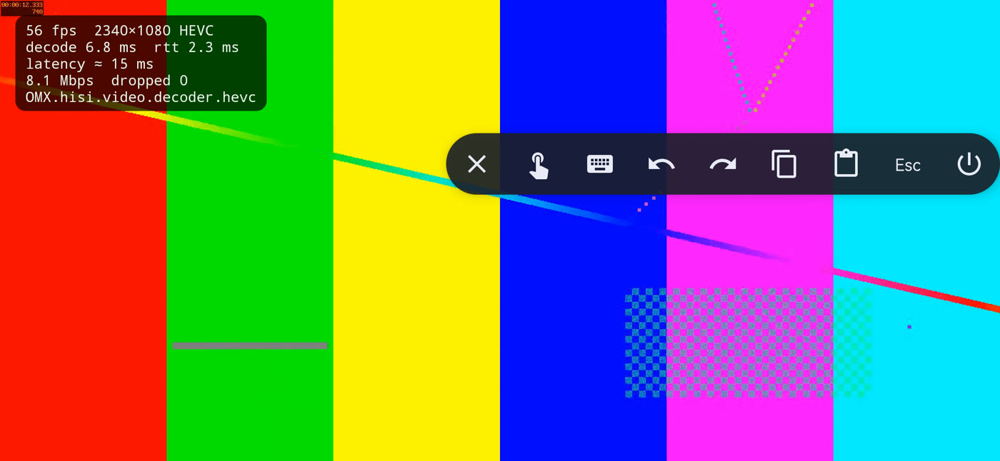

Actually extend.
A real virtual monitor on Mac. On Windows, add the optional Virtual Display Driver to extend, or mirror an existing screen.
FREE & OPEN SOURCE · MAC + WINDOWS
That Android in your drawer?
It’s your next second monitor.
Extend your workspace, bring your pen, or keep a little more in view. All with the device you already own.
No account. No subscription. Yours to use and change.
01 / MORE THAN A MIRROR
Keep the reference beside the canvas. Give your chat its own corner. Put your tools where your hands are.
AnyDisplay sends your desktop to Android and brings touch, pen and keyboard input back. A cable when you want one. Wi-Fi when you don’t.
Read the story behind AnyDisplay ↗A real virtual monitor on Mac. On Windows, add the optional Virtual Display Driver to extend, or mirror an existing screen.
Touch, trackpad mode, keyboard and pen input. Pressure and tilt support is implemented; real-stylus testing is still on our list.
Connect over USB or your local Wi-Fi. Compare a six-digit code to pair wirelessly, then stream over an encrypted connection.
REAL SOFTWARE. REAL DEVICES.
Built in the open, tested on real hardware, and getting better with every device report.
Results vary by device and network. This is one tested setup, not a promise for every screen.

02 / TWO DOWNLOADS. ONE WORKSPACE.
Install the app on Android, then choose your computer.
Android 8.0 or later
Download APK Allow installation from your browser when Android asks.macOS 14+ · Apple silicon & Intel
Download for Mac Menu bar app. Not notarized yet — see the setup steps below.Windows 10 (1809)+ / 11 · x64
Download for Windows Command-line host. Optional display driver for extend mode.03 / YOUR FIRST CONNECTION
Start with the Android app open.
Then follow the steps for
your computer.
Move AnyDisplay.app to Applications and open it. If macOS blocks the first launch, go to System Settings → Privacy & Security → Open Anyway. Look for the overlapping screens icon in the menu bar.
Use the menu to allow Screen Recording for video and Accessibility for touch, pen and keyboard. Restart the app if macOS asks.
Wi-Fi: join the same network, select your device in the menu and confirm the matching code on both screens.
USB: install Android Platform-Tools, enable USB debugging and accept the computer prompt on Android. Restart the Mac app after installing adb; USB auto-connect is on by default.
Extract the Windows download. Open PowerShell in the folder containing anydisplay-win.exe.
.\anydisplay-win.exe listUSB: install Android Platform-Tools, enable USB debugging, unlock Android and allow this computer.
.\anydisplay-win.exe usbWi-Fi: use the Android app’s IP address and confirm the code on both screens.
.\anydisplay-win.exe connect <device-IP>The host mirrors a monitor by default. For a separate workspace, install the optional Virtual Display Driver and arrange it in Windows display settings.
THE GROWING LIST
| Android device | Computer | What’s been verified |
|---|---|---|
| Huawei P30 ProMaintainer testing | MacBook Pro | USB & Wi-Fi · video, pairing and touch |
| TCL NXTPAPER 11 PlusAndroid 15 · 9469X | Windows 11 |
USB · hardware HEVC at 2200 × 1440 Reported by @dionisvl ↗ |
Individual reports, not blanket compatibility guarantees. Windows input, audio and clipboard need more hardware testing.
A FEW GOOD QUESTIONS
Yes. AnyDisplay is MIT-licensed open source. There are no ads, accounts or subscriptions. Download it, inspect it, change it.
The app requires Android 8.0 or later. Performance depends on your device’s video decoder, resolution and connection. Start with the tested-device list above, and let us know how yours does.
A cable is optional: Wi-Fi works too. USB needs Android Platform-Tools and USB debugging. Mac creates its own virtual display; Windows needs the optional Virtual Display Driver for an extended desktop, but can mirror without it.
Use a data-capable cable, unlock Android, enable USB debugging and
accept the computer authorization prompt. Run
adb devices -l: the state must be
device. For a device with an empty serial, keep only
one USB Android device attached. See the
troubleshooting guide.
It’s an early project. Mac-to-Android streaming has been tested on real hardware, and we now have our first Windows hardware report. The Mac app is not notarized, Windows is experimental, and physical stylus testing is still needed. See the current status.